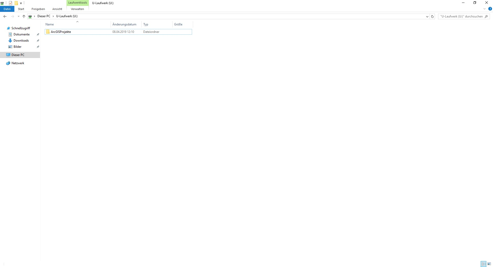
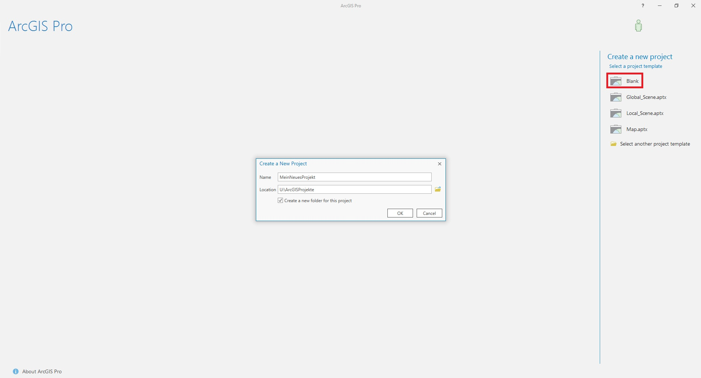
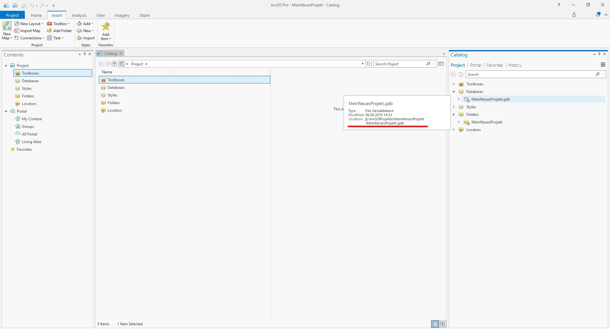
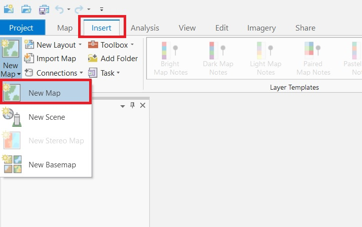
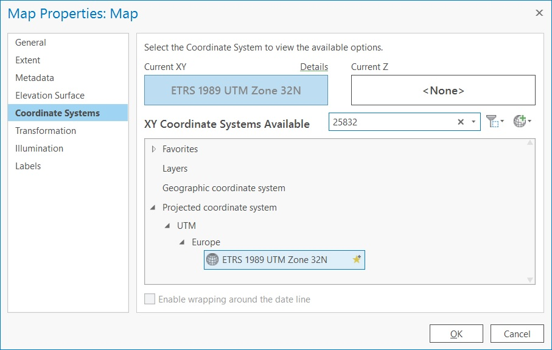
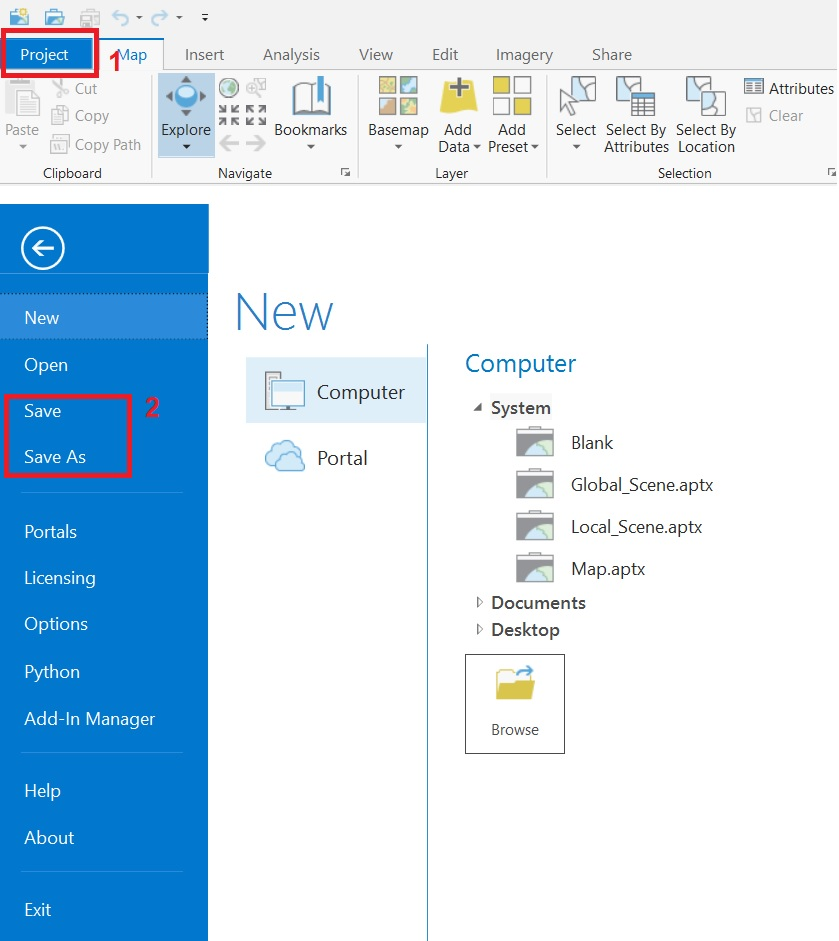
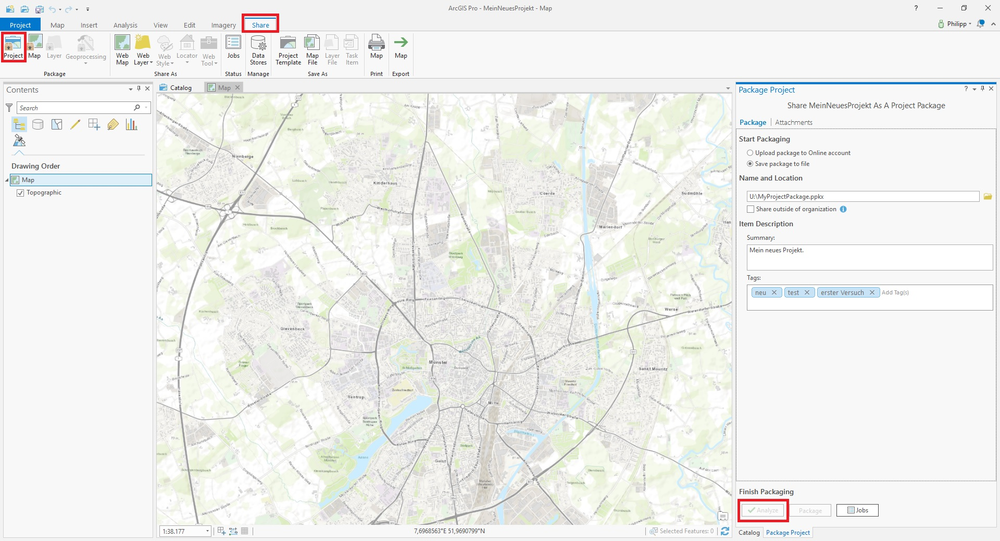
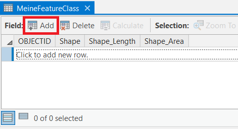
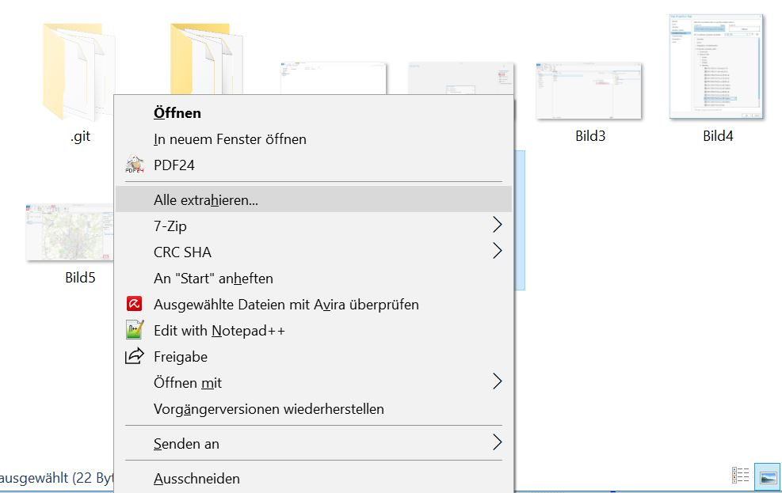

Erstelle einen Ordner für alle künftigen Projekte. Dieser sollte sich auf einem der privaten Laufwerke (U: oder S:) oder wahlweise auf einem USB-Stick befinden.
Öffne ArcGis Pro und erstelle ein neues Projekt (Blank) und wähle den gewünschten Speicherort für dieses Projekt aus. In dem gewählten Speicherort wird ein neuer Ordner für das Projekt angelegt und alle zukünftig erzeugten Daten werden in diesem gespeichert.
Nach der Erzeugung des Projekts solltet Ihr die Speicherorte kontrollieren, z.B. die der „Databases“.
Bevor man mit der Arbeit beginnen kann, muss man eine sogenannte "Map" einfügen. Dies ist über "Insert" ► "New Map" möglich.
Bevor mit dem Einladen von Geodaten begonnen wird, sollte das passende Koordinatensystem für die „Map“ festgelegt werden. Das System richtet sich u.a. an die Anforderungen des Projekts aber auch an die später verwendeten Daten. Wir wählen, solange nichts anderes vorgegeben, das System „ETRS 1989 UTM Zone 32N (EPSG: 25832)“ .
Es gibt mehrere Varianten das Projekt zu speichern. Einerseits klassisch über "Projects" -> "Save" bzw. "Save As".
Andererseits können Projekte ganz einfach geteilt und auch so sicher gespeichert werden. Diese Funktion ist eine Erweiterung des normalen Speicherns, sie speichert die gesamten Daten im Projekt und verpackt sie zu einem s.g. „Project Package“.Dies bedeutet, dass das Projekt inkl. der verwendeten Daten gespeichert wird. Diese Datei kann daher als Sicherung aber auch zum Teilen des Projekts dienen. Es eignet sich u.a. für den Export auf einen USB-Stick.
Folder Connection“ ermöglicht einen schnelle Zugriff auf die Daten.
Schritt 1:
Öffnen des „Catalog-Fensters“
Schritt 2:
Rechtsklick auf „Folders“ und dann „Add new Folder Connection“
Schritt 3:
Markieren des Ordners und anschließender Klick auf „OK“.
Tipp:
Am besten immer den Projektordner markieren und nicht „tief“ in den Ordner
navigieren. So kann man am effektivsten auf alle Daten zugreifen.
Schritt 1:
Hinzufügen von Daten über „Add Data“ (zu finden im „Map“-Reiter).
Alternative:
Hinzufügen von Daten per Drag & Drop aus dem „Catalog“
„FileGeodatabase“: lokale Geodatenbank zur Datenspeicherung.
Schritt 1:
Im Catalog - Rechtsklick auf den Ordner in dem die FileGeodatabase angelegt werden soll ► „New“ ►
„FileGeodatabase“.
Schritt 2:
Vergeben eines eindeutigen Namens.
„FeatureClass“: Homogene Sammlungen häufig verwendeter Features (Fachobjekt, z.B. ein Baum) mit derselben
räumlichen Repräsentation (FeatureClass z.B. „Baumkataster“).
Schritt 1:
Rechtsklick auf die Geodatenbank in dem die FeatureClass erstellt werden
soll ► „New“ ► „FeatureClass“.
Schritt 2:
Eintragen des Namens sowie des Geometrie-Typs.
Schritt 3:
Auswahl des Koordinatensystems.
Schritt 4:
Erstellung der FeatureClass durch Klick auf „Run“ durchführen.
Schritt 1:
Rechtsklick auf die angelegte FeatureClass ►“Design“ ► „Fields“.
Alternativ: Attributtabelle der angelegten FeatureClass öffnen und auf „Add“ klicken.

Schritt 2:
In „Field Name“ Zelle auswählen und Name für Attribut vergeben, danach den
Datentyp auswählen.
Schritt 3:
Die angelegten Attribute speichern („Fields“-Reiter ► „Save“).
Schritt 0:
ggf. Aktivieren der Toolbar über „Projects“ ► „Options“ ► „Customize the
Ribbon“ (siehe https://pro.arcgis.com/de/pro-app/get-started/customize-theribbon.htm).
Schritt 1:
Editieren der Feature-Geometrien.
Schritt 2:
Editieren der Feature-Attribute.
Schritt 3:
Editiersitzung speichern und beenden.
Schritt 1:
ein unreferenziertes Bild bzw. Karte als Ausgangsdatenbestand hinzufügen.
Schritt 2:
den Ausgangsdatenbestand im "Content"-Fenster auswählen, sodass dieser markiert ist. Nur in diesem Zustand lässt sich das folgende Tool ausführen, sonst ist es ausgegraut.
Schritt 3:
Toolbar "Georeference" über "Imagery" ► "Georeference" aktivieren. Es öffnet sich automatisch die richtige Toolbar.
Schritt 4:
Kartenausschnitt auf Bereich einstellen, in dem die Passpunkte erfasst werden sollen und die Ausgangsdaten mit "Fit ti Display" in diesem Bereich verschieben. Mithilfe von "Move", "Scale" und "Rotate" lässt sich der Ausgangsdatenbestand bereits gut an den Kartenausschnitt anpassen.
Schritt 5:
Passpunkte mittel "Add Control Points" hinzufügen. Zuerst in den Ausgangsdaten, anschließend in den Referenzdaten.
Mithilfe der "Control Point Table" lassen sich die einzelnen Passpunkte nochmals anzeigen und ggf. wieder löschen. (Man kann das Häkchen nebst einem Passpunkt entfernen und schauen, ob die Georeferenzierung ggf. besser wird. Sollte dies der Fall sein, so ist es förderlich diesen Passpunkt zu löschen und einen neuen zu setzen.)
Schritt 6:
Ergebnis sichern.
"Save": Ergebnis wird direkt im aktuellen Projekt gespeichert. Dadurch wird die Original-Bild-Datei nicht verändert, sondern die nötige Bild-Transformation permanent im Projekt angewendet.
"Save as New": Ergebnis der Georeferenzierung wird in einer neuen Datei gespeichert und kann in anderen Projekten oder anderer Software verwendet werden.
„Join“: Verbinden von Tabellen
Anmerkung: Der Join ist nur temporär, das heißt wenn man den Layer in ein anderes Projekt lädt ist die Verbindung zu der anderen Tabelle nicht mehr vorhanden und müsste neu gesetzt werden.
Vorbereitung:
Ggf. zu joinende Tabelle erstellen oder formatieren. Es ist sicherzustellen, dass beide Tabellen ((Attribut-)Tabelle des Layers und die zu verbindende Tabelle (oft CSV- oder Excel-Tabelle)) über ein eindeutiges Attribut verfügen, dass jeweils vorhanden ist. Anhand dessen kann man letztlich die beiden Tabellen miteinander verknüpfen.
Schritt 1:
Aufrufen des Werkzeuges "Add Join" über einen Rechtsklick auf den ausgewählten Layer im Contentfenster ► "Joins and Relates" ► "Add Join".
Schritt 2:
Die einzelnen Parameter des Werkzeuges mit Daten füllen und die Auswahl über das jeweilige eindeutige passende Attribut bzw. Spalte treffen. Die zu verbindende Tabelle kann mittels des Ordnersymbols über ein neues sich öffnendes Fenster ausgewählt werden. Es ist dabei zu beachten, dass eine Excel-Tabelle aus mehreren Tabellenblättern besteht. Daher muss man bis zum jeweiligen Tabellenblatt navigieren und dieses auswählen (siehe folgendes Bild). Ein Tabellenblatt ist dadurch gekennzeichnet, dass dem Tabellenblattnamen ein Dollarzeichen folgt.
Resultat:
Als Resultat erhält man eine Tabelle mit allen Informationen aus beiden vorigen verwendeten Tabellen vorausgesetzt die Attributwerte des angegebenen Attributs stimmen überein.
Um die erstellten Daten ansehnlich anzeigen zu lassen in Form einer klassischen Karte bedarf es der Erstellung eines Layouts unter Hinzunahme der jeweiligen Layer.
Schritt 1:
Hinzufügen eines Layouts über "Insert" ► "New Layout". Man wählt zunächst das gewünschte Format aus und es öffnet sich ein neues Fenster innerhalb des Programms.
Schritt 2:
Nun muss man seine "Map" dem Layout hinzufügen. Dies geht über "Insert" ► "Map Frame".
Schritt 3:
Möchte man den Ausschnitt der Karte verändern, muss man zunächst das Kartenfenster über "Layout" ► "Activate" aktivieren. Nun ist es möglich mit den bekannten Mausklicks den Maßstab oder den Bereich zu verändern. Hat man seinen gewünschten Ausschnitt gefunden, muss die Aktivierung geschlossen werden: "Layout" ► "Close Activation".
Schritt 4:
Das Hinzufügen von diversen Kartenelementen ist über "Insert" möglich. Nach erfolgreichem Einfügen eines Elementes ist es über "Properties" (Rechtsklick auf Element) möglich weiterführende Einstellungen zu treffen.
Schritt 5:
Nach Fertigstellung des Layouts kann man dieses über "Share" ► "Layout" exportieren. Es öffnet sich ein neues Fenster in welchem man den Namen und das Dateiformat angeben muss. (Über den Dropdown-Pfeil kann man alle möglichen Dateitypen einsehen und auswählen.)
Große Datenmengen liegen häufig im ".zip" Format vor. Um mit diesen arbeiten zu können, müssen diese extrahiert werden. Dies geschieht über einen Rechtsklick auf den entsprechenden Ordner und der Auswahl "Alle extrahieren". Anschließend muss der Ort angegeben werden, wo der entpackte Ordner gespeichert werden soll.
